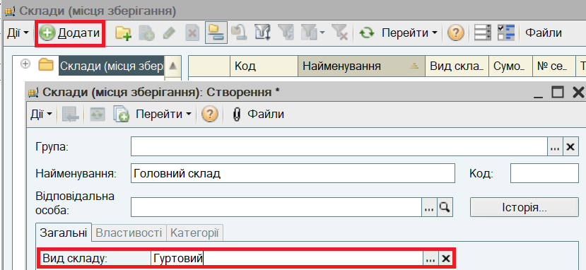

| ПРИМІТКА Склади — це місця зберігання товарів на торговому підприємстві. Склади є загальними для всіх організацій, що входять до складу торгового підприємства. Кількість складів, на яких зберігаються товари торгового підприємства, не обмежена. Склади можна об'єднувати в групи та підгрупи. |
Нові групи і елементи в довіднику Склади (місця зберігання) створюються так само, як в довіднику Контрагенти (див. розділ "Заповнення відомостей про діловіх партнерів торгового підприєства").

Наступний розділ: "Заповнення відомостей про товари і послуги торгового підприємства"